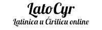

Srki Tech
|LatoCyr
Latinica u Ćirilicu
online konverter zamicrosoft 365
office
word
ilibreoffice writer
.Latinica u ćirilicu, ćirilica u latinicu konverter - prebacivač
: prebacite tekst sa jednog pisma u drugo.
Važno! - ukoliko niste pri pristupanju na stranu prvi put dozvoliti "Clipboard" u pregledaču, morate ručno "Zalepiti" tekst.